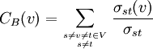

Description
Calculate the node degree, the closeness and the betweenness of each
node and specifies if this node is a seed or a target node. Weighted graphs are
supported for the calculation of the betweenness and of the closeness.
Self loops (edges having the same starting and ending points) are ignored in the calculation
of the betweenness and of the closeness.
Authors
Options
Input formats
The accepted input formats are GML, tab-delimited and adjacency matrix.
For more explanations about these, refer to the manual of convert-graph.
Column specifications (only for tab-delimited format)
Source and target column. Columns containing the source and target nodes.
Weight or label column. Column containing a label or a weight (real value) for the edge. This is useful for the calucation of the betweenness and of the closeness (see below).
Return fields
Statistics that the program must compute. (Following definitions are adapted from wikipedia).
Degree : Node degree is defined as the number of links incident upon a node (i.e., the number of ties that a node has). Degree is often interpreted in terms of the immediate risk of node for catching whatever is flowing through the network. If the network is directed (meaning that ties have direction), then the program returns three separate measures for the node degree, namely in- and out-degree. In-degree is a count of the number of ties directed to the node, and outdegree is the number of ties that the node directs to others. In that case, the program also compute the global degree (sum of the in and out degree) and specifies whether the node is a source / target node only.
Betweenness : Betweenness is a centrality measure of a vertex within a graph. Vertices that occur on many shortest paths between other vertices have higher betweenness than those that do not.
For a graph G = (V,E) with n vertices, the betweenness B(v) for vertex v is:

where s_st is the number of shortest geodesic paths from s to t, and s_st(v) is the number of shortest geodesic paths from s to t that pass through a vertex v.
Closeness : Closeness is defined as the mean geodesic distance (i.e the shortest path) between a vertex v and all other vertices reachable from it.
Calculating the betweenness and closeness centralities of all the vertices in a graph involves calculating the shortest paths between all pairs of vertices on a graph. To this, graph-topology uses the Floyd-Warschall algorithm (running in C).
Directed graph
Specifies whether the graph is directed or not (i.e. edge A-B
corresponds to edge B-A). In this case, the betweenness and the
closeness calculation will be rather different (as their are less possible paths in directed graphs).
Moreover, the out- and in-degree will be computed in directed graphs.
Nodes
The list of nodes for which the degree is seeked.
The nodes can be submitted as a file containing one node name per line or directly in the input form. In the node file, the first word of each row must specify one node label and the rest of the row is ignored.
If no node is submitted, then degree of all nodes will be computed (even if the option 'List of nodes' is selected).
Using this option, the degree distribution of the nodes will not be computed.